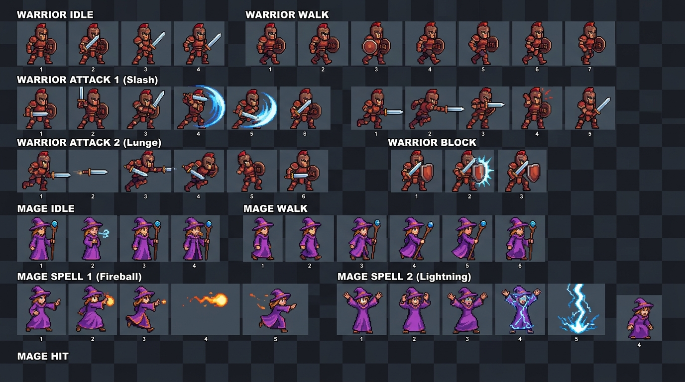
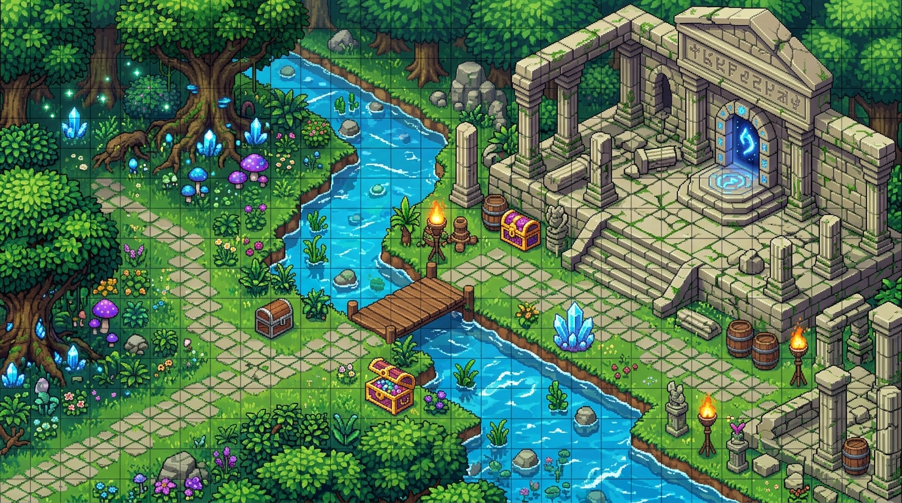
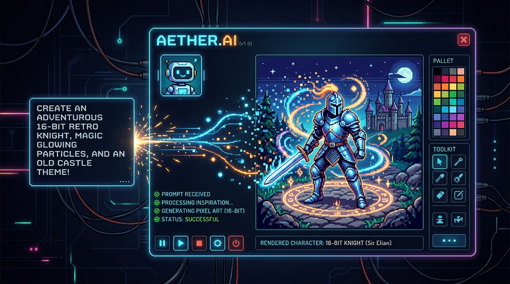

Designed for the craft.
Every tool, palette, and gesture engineered for tactile speed and pure creative flow.
Complete art studio.
Non-destructive layers, blend modes, and classic retro palettes (DB32, PICO-8, Game Boy). Every brush stroke composites in an ultra-fast Rust core with zero latency.

Animate in real-time.
Multi-frame timeline with variable durations, colored onion skinning, and tag looping. Bring 2D characters and combat motions to life at silky 60fps.

Build entire game worlds.
Grid-based tilemap design with multi-layer editing, autotiling, pattern stamping, and minimap inspection. Fully compatible with Tiled JSON format for instant import into Godot, Unity, or custom engines.

Intelligent asset co-pilot.
Embedded AI engine powered by OpenRouter and ChatGPT Codex. Generate character concepts, spritesheets, extrapolate next animation frames, and quantize retro colors.

Intuitive color disc.
Procreate-style color disc with smooth hue ring, saturation square, and preset retro swatches. Pick, save, and export palettes with zero friction.

MetalKit Acceleration
Smooth 60fps pan, zoom, and brush blits. Composite whole frames directly into Metal GPU textures without per-pixel FFI overhead.
Pure Rust Core
Memory-safe domain engine. Undo/redo history, blend math, and path jailing run in high-performance headless Rust.
Game Engine Ready
Export packed spritesheet texture atlases, JSON manifests, and Tiled maps directly into Godot, Unity, or Defold.